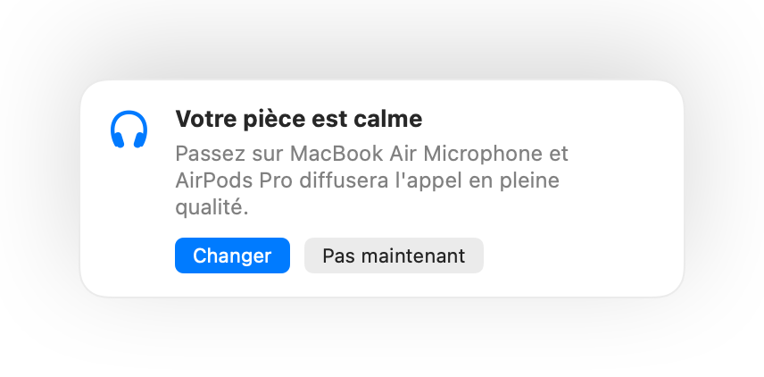

Pourquoi le son des AirPods se dégrade lors des appels sur Mac
Rejoignez un appel avec des AirPods et le son devient soudain plat et étouffé. Ce n'est pas un défaut. Dès qu'une app utilise le micro des AirPods, le Bluetooth fait basculer les AirPods dans un mode appel qui diffuse l'audio en qualité bien inférieure.
La solution consiste à parler dans le micro de votre Mac et à laisser les AirPods uniquement diffuser le son. Dans une pièce calme, le micro de votre Mac est tout aussi bon, et l'appel est à nouveau diffusé en pleine qualité. Muffle détecte quand votre pièce est calme et vous suggère de changer.
Conserver une qualité audio maximale en appel
- 1
Installez Muffle et laissez l'option « Suggérer le meilleur micro pour la pièce » activée.
- 2
Rejoignez votre appel avec vos AirPods comme d'habitude.
- 3
Quand Muffle vous indique que votre pièce est calme, cliquez sur Changer.
- 4
S'il y a du bruit plus tard, Muffle vous suggère à nouveau le micro des AirPods.

- Le changement fonctionne quand votre app d'appel utilise le micro par défaut du système. Dans Google Meet, Zoom et Teams, choisissez l'option par défaut ou identique au système.
- Restez près de votre Mac quand vous utilisez son micro. Muffle ne le suggère que s'il peut vous entendre distinctement.
Questions fréquentes
Pourquoi les AirPods ont-ils un mauvais son lors des appels sur Mac ?
Le Bluetooth ne peut pas transmettre simultanément la stéréo haute qualité et votre voix. Les AirPods basculent donc en mode appel tant que leur micro est utilisé.
Muffle change-t-il de micro tout seul ?
Non. Muffle ne fait que vous suggérer un meilleur micro. Rien ne change tant que vous ne cliquez pas sur Changer.